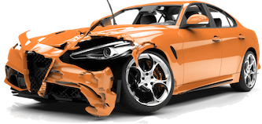

Nr. 1 bei Autounfällen!


Wie funktioniert's?
Alle Schritte einfach erklärt

- 1Anrufen oder digital melden
- 2Gutachter wird zugewiesen
- 3Unabhängige Dokumentation
- 4Gutachten wird erstellt
- 5Wir kümmern uns um den Rest

- Ganzheitliche Betreuung
- Qualifizierte Fachexperten
- Schneller Service
- Transparente Abwicklung
Blitzmerker
„Dir steht als Unfallgeschädigter immer ein unabhängiger Kfz-Gutachter zu. Für die Kosten muss bei einem unverschuldeten Verkehrsunfall die gegnerische Versicherung aufkommen. Ein Kfz-Gutachter in der Nähe ist für dich daher kostenlos“
Vorteile eines Kfz-Gutachters im Überblick
Vorteile der anwältlichen Betreuung im Überblick
-
Kfz-Gutachter: Entdecke die Vorteile eines Unfallgutachter
Ein Autounfall ist oftmals eine stressige und belastende Situation. Neben den Sorgen um das Wohlbefinden der Insassen und den Schäden am Fahrzeug, kommen finanzielle und rechtliche Aspekte dazu. In diesen Situationen ist das Einschalten eines unabhängigen Kfz-Gutachters in der Nähe sehr wertvoll. Dieser Artikel befasst sich mit den Vorteilen, die sich ergeben, wenn du einen Kfz-Gutachter in der Nähe, auch Kfz-Sachverständiger genannt nach einem Autounfall in Anspruch nimmst. -
Die Unabhängigkeit des Kfz-Gutachters
Einer der wichtigsten Vorteile eines Unfallgutachters in der Nähe ist seine unabhängige Expertise. Der unabhängige Kfz-Gutachter arbeitet nicht mit Versicherungen oder Werkstätten zusammen, das heißt, es entsteht hier kein Interessenskonflikt. Seine Priorität liegt darin, den Schaden an deinem Fahrzeug objektiv zu bewerten und zu bewerten. Als Nächstes wird der Unfallgutachter die weiteren Schritte zur Reparatur oder Entschädigung deines Fahrzuges empfehlen. -
Der Kfz-Gutachter entdeckt versteckte Schäden
Unfallgutachter sind Experten und haben meistens einen breiten Schatz an Erfahrungen, was das Beurteilen von Fahrzeugen angeht. Sie sind ziemlich genau und können den Umfang der Beschädigungen exakt bestimmen. Darüber hinaus entdecken Unfallgutachter auch verstecke Schäden, die für das ungeschulte Auge nicht erkennbar sind. Diese präzise Bewertung ist entscheidend für eine faire Entschädigung an den Geschädigten. -
Ein Unfallgutachter maximiert die Schadenssumme
Um eine für dich faire Kompensation zu erhalten, braucht es eine detaillierte Schadensbewertung. Der Kfz-Gutachter hilf ihnen dabei die maximale Entschädigung von deiner Versicherung oder der Gegenseite zu erhalten. Denn die präzise Schadensbewertung hebt dich in die bessere Verhandlungsposition und erhöht deine Chancen eine bessere Schadenssumme für deine Verluste ausgezahlt zu bekommen. -
Der Service eines Kfz-Sachverständigen ist für Geschädigte kostenlos
Dir steht als Unfallgeschädigter immer ein unabhängiger Kfz-Gutachter zu. Für die Kosten muss bei einem unverschuldeten Verkehrsunfall die gegnerische Versicherung aufkommen. Wir, die Unfallpaten, beauftragen kostenlos einen Kfz-Gutachter in der Nähe für dich. Ein Unfallgutachter beurteilt nicht nur die bei einem Autounfall entstanden Schäden, sondern auch den Wert deines Fahrzeugs vor und nach dem Unfall. -
Der Kfz-Gutachter erspart dir Streitigkeiten
Das Auseinandersetzen mit Versicherungen oder anderen Parteien nach einem Autounfall kann sich lange hinziehen und verursacht Stress. Durch den Einsatz eines Unfallgutachters werden viele Prozesse beschleunigt, indem sachliche Informationen und Beweise bereitgestellt werden. Dies kann dir Zeit, Energie und Nerven sparen. -
Auf Nummer Sicher gehen mit dem Unfallgutachter
Ein Kfz-Gutachter kann auch im Anschluss nach der Reparatur überprüfen, ob dein Fahrzeug wieder sicher und fahrtauglich ist. Wird das Fahrzeug nicht gründlich untersucht, können Sicherheitsrisiken übersehen werden. Der Kfz-Sachverständiger in der Nähe überprüft, ob alle Schäden ordnungsgemäß behoben wurden, damit du auf der sicheren Seite stehst. -
Der Kfz-Gutachter als rechtliche Unterstützung
In manchen Fällen, kann ein Kfz-Gutachter vor Gericht auftreten und dich bei der Durchsetzung deiner Rechte unterstützen. Ihre Expertise kann dazu beitragen, den Prozess deutlich reibungsloser und erfolgreicher zu gestalten. Bei unfallpaten.de stellen wir dir einen Kfz-Gutachter in der Nähe zur Verfügung. -
Die Unfallpaten kümmern sich um dich
Die Inanspruchnahme eines Kfz-Sachverständigen in der Nähe nach einem Verkehrsunfall kann eine sehr kluge Entscheidung sein. Er begleitet dich mit seiner Expertise durch den Prozess, reduziert den Stress, hilft dir dabei deine finanziellen Interessen zu wahren und gewährleistet deine Sicherheit. Denk dran, du hast das Recht als Geschädigter kostenlos einen unabhängigen Unfallgutachter in der Nähe zu beauftragen. In einer Zeit, die sehr belastend sein kann, solltest du die Möglichkeit nicht verpassen, dir die bestmögliche Unterstützung zu sichern. Wir bei unfallpaten.de unterstützen dich gerne mit einem unabhängigen Kfz-Gutachter in der Nähe. Dies gilt für alle unseren weiteren Leistungen für die Schadenabwicklung aus einer Hand: die Vermittlung eines Anwalts für Verkehrsrecht, eines Ersatzwagens, einer Reparatur-Werkstatt sowie die Einforderung nach der Schadenssumme.
Unabhängiger Kfz-Gutachter bei dir in der Nähe
mehr als
10000
erfolgreiche Unfallabwicklungen
bis zu
30%
höhere Schadensumme
bis zu
40%
schnellere Auszahlung
Das sagen Kunden


Kostenlose Unfallabwicklung
Als Geschädigter musst du weder finanziell in Vorleistung gehen, noch werden dir die Kosten später von deiner Schadensumme abgezogen